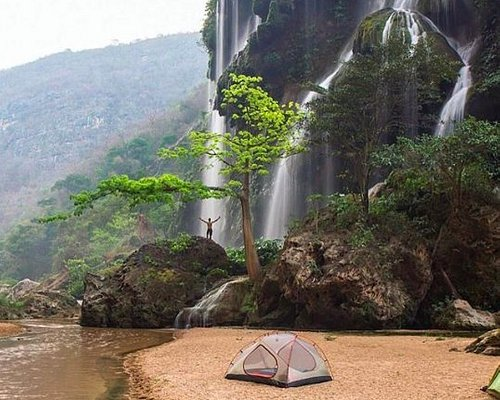
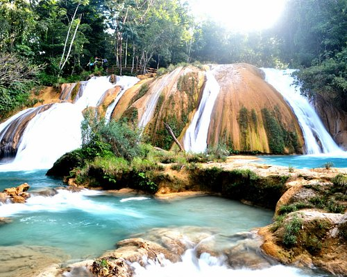
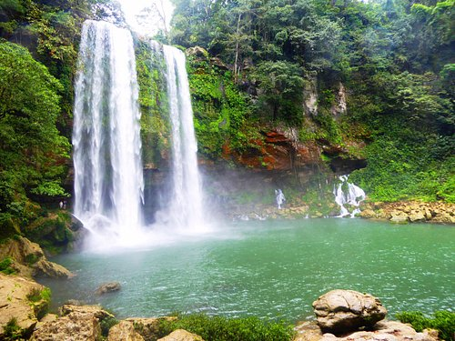
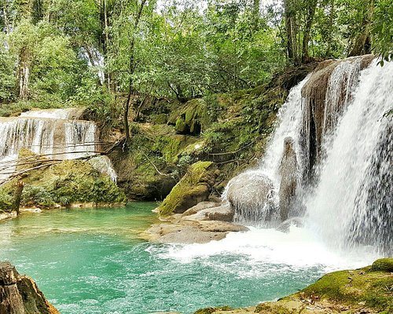
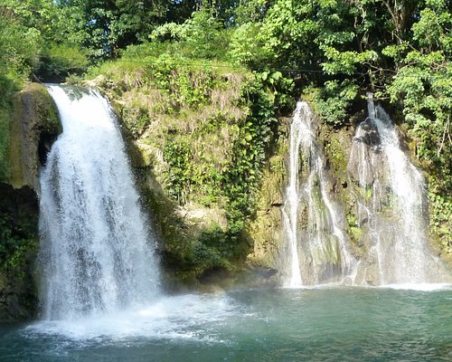
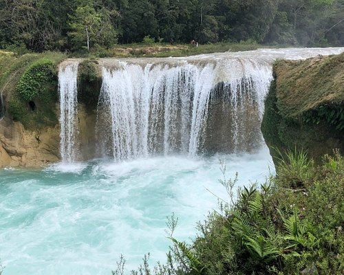
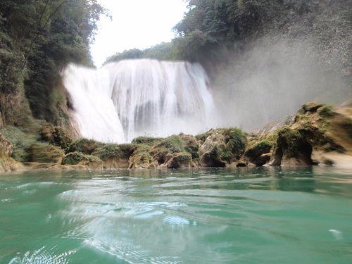
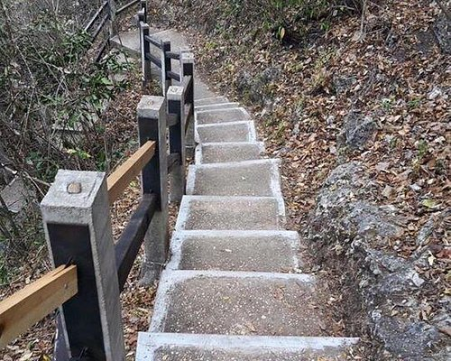
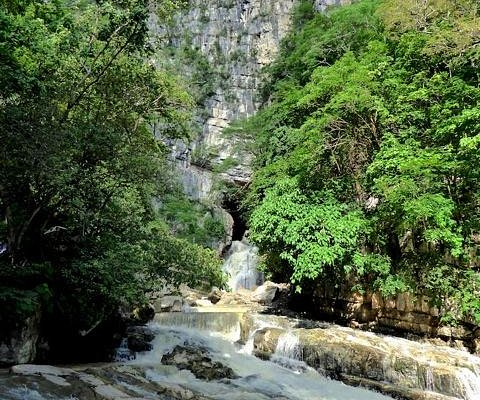
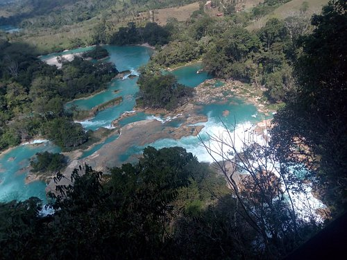

CHIAPAS ES CARACTERIZADO POR SER UNO DE LOS ESTADOS MAS VISITADOS POR SUS ATRACTIVAS RESERVAS NATURALES Y SE CONSIDERA UNO DE LOS PULMONES DEL MUNDO POR TENER UNA AMPLIA GAMA DE BOSQUES Y SELVAS PROTEGIDAS.CADA AÑO EN SEMANA SANTA SUS PLAYAS, RIOS, CASCADAS, CENTROS NATURALES SE LLENAN POR LAS ACTRACTIVAS VISTAS Y DEPORTES QUE UNO PUEDE REALIZAR ,CHIPAS SU MAYOR INGRESO ECONÓMICO ES EL TURISMO.DADO QUE SER UN ESTADO MUY CULTURAL CADA PUEBLO O CIUDAD TIENE SU PROPIA CULTURA Y RELIGION QUE LO HACE VER ATRACTIVOS PARA LOS VISITANTES .EN CHIAPAS SU POBLACION MAYORMENTE SON LOS PUEBLOS INDIGENAS Y EXISTEN DIVERSOS LENGUAJES.
| CASCADA EL AGUACERO  | Cascada el AguaceroCASCADAS DE AGUA AZUL  | CASCADAS DE MISOL-HA  | CASCADA DE ROBERTO | WELIB JA WATERFALLS |
| CASCADAS LAS NUBES  | LA ASUNCION | CENTRO ECOTURISTICO EL AGUACERO | EL CHORREADERO | CASCADAS VERDES LAS NUBES |